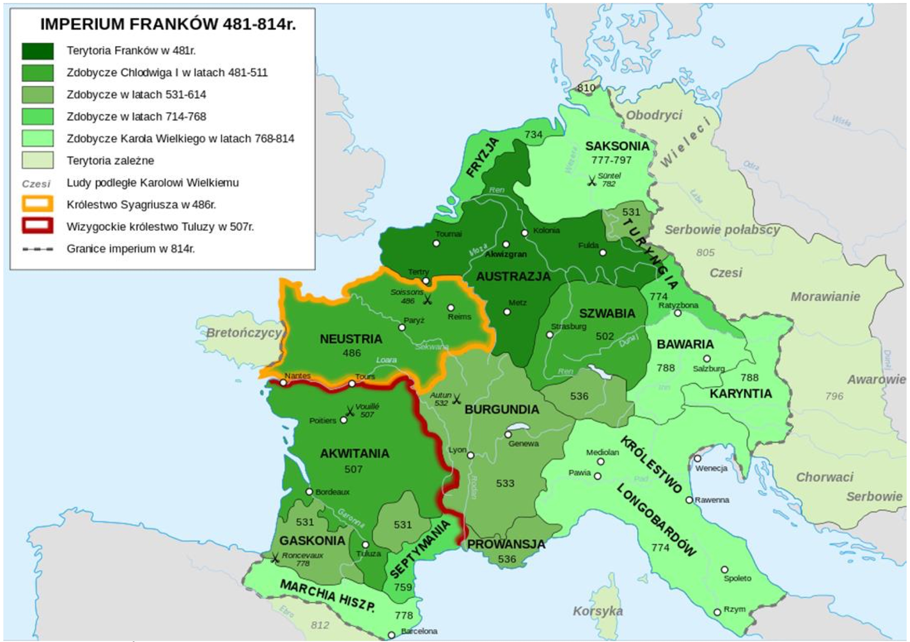
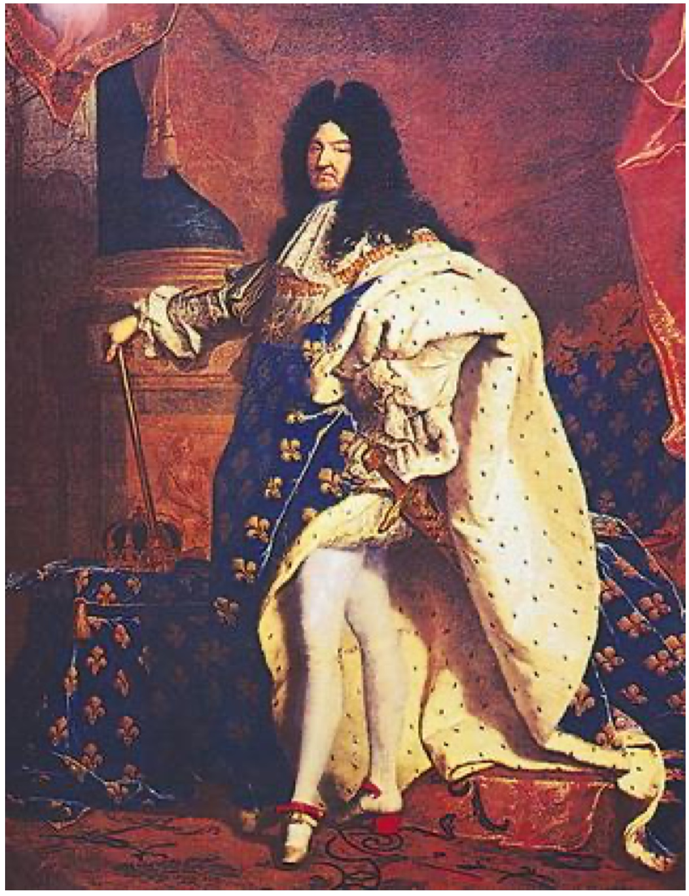
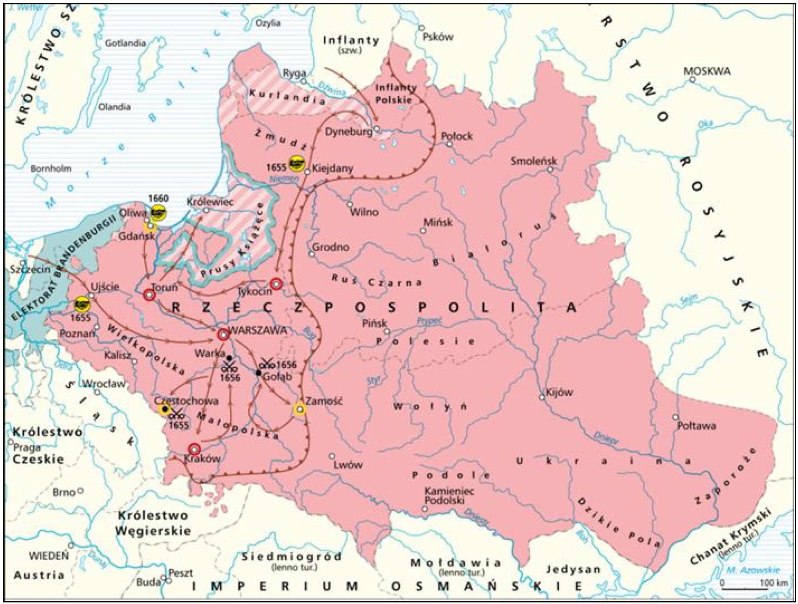
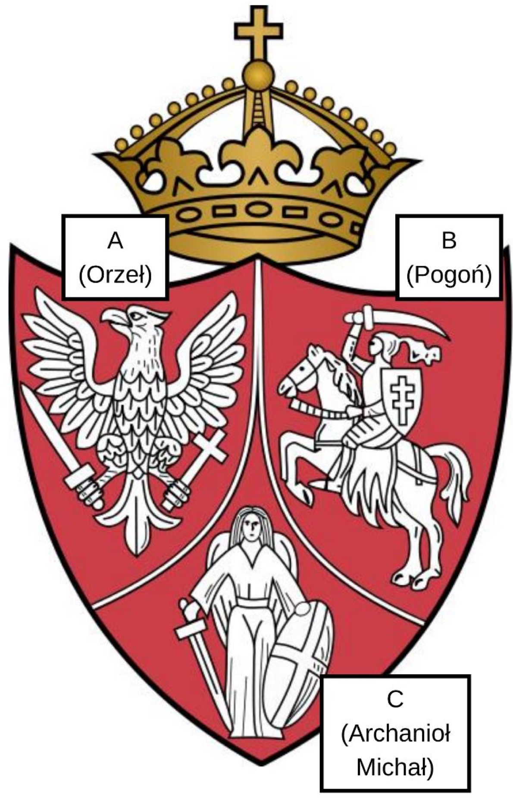

KOD UCZNIA:
Arkusz treningowy złożony w całości z zadań, które wystąpiły w oficjalnych arkuszach etapu rejonowego Wojewódzkiego Konkursu Przedmiotowego z Historii Kuratorium Oświaty w Bydgoszczy w latach 2022/2023, 2023/2024 i 2024/2025. Przy każdym zadaniu podano rok i numer zadania w arkuszu źródłowym. Dobór i kolejność zadań oraz skład graficzny są własne – to nie jest oficjalny arkusz konkursowy.
Uzupełnij tekst, wybierając właściwe pojęcia wymienione w nawiasach (podkreśl je).
Ludzie zaczęli prowadzić osiadły tryb życia w (paleolicie czy neolicie). Dzięki temu mogli rozpocząć uprawę ziemi lub hodowlę zwierząt. Wybierając miejsce do osiedlenia, decydowali się na bliską obecność rzek. W związku z tym Sumerowie założyli osady nad m.in. (Nilem czy Eufratem). Egipcjan i Sumerów, prócz zamieszkania nad rzekami, łączyła wiara w wielu bogów, czyli (monoteizm czy politeizm). Ponadto (Egipcjanie czy Sumerowie) wprowadzili mumifikację. Wierzono, że po śmierci zmarły trafi przed sąd boga (Ozyrysa czy Anubisa), który stwierdzi po wadze serca, na co zasługuje zmarły. Oba ludy zadbały też o rozwój pisma. W przypadku Sumerów mieliśmy do czynienia z (pismem klinowym czy hieroglifami). Natomiast Egipcjanie opracowali sposób produkcji materiału piśmienniczego zwanego (pergaminem czy papirusem). Starożytnym ludem, który różnił się od Sumerów i Egipcjan w kwestii wiary, byli (Izraelici czy Grecy). Istotnym elementem ich wiary była skrzynia, gdzie trzymano tablice z Dziesięciorgiem Przykazań – była to (Tora czy Arka Przymierza). Znajdowała się ona w świątyni (Dawida czy Salomona) w Jerozolimie.
Przeanalizuj mapkę znajdującą się poniżej, a następnie dokończ zdania, wybierając poprawne zakończenie.

Źródło: pl.wikipedia.org/wiki/Państwo_frankijskie – plik Frankish_Empire_481_to_814-pl.svg
1. W momencie objęcia władzy przez Chlodwiga państwo Franków obejmowało obszar:
2. Za panowania Karola Wielkiego najpóźniej do jego państwa przyłączono:
3. Tereny zależne od Imperium Franków zamieszkane przez plemiona słowiańskie graniczyły z państwem Franków od:
4. Jednym z ludów podległych Karolowi Wielkiemu zamieszkujących tereny na wschód od Imperium Franków byli:
Przeczytaj uważnie poniższy tekst źródłowy, a następnie, korzystając z informacji w nim zawartych i własnej wiedzy, zaznacz właściwe zakończenie zdań umieszczonych pod tekstem.
Fragment reguły św. Benedykta
1. […] gdy tylko przełożony wyda jakieś polecenie, nie zwlekają [mnisi] ani chwili z jego wykonaniem tak, jak gdyby sam Bóg rozkazywał. […] Tacy właśnie porzucają natychmiast swoje sprawy i wyrzekają się własnej woli. Od razu wszystko wypuszczają z ręki i pozostawiają nie ukończoną pracę, którą wykonywali, aby jak najrychlej w duchu posłuszeństwa odpowiedzieć czynem na otrzymane polecenie.
2. Bezczynność jest wrogiem duszy. Dlatego też bracia muszą się zajmować w określonych godzinach pracą fizyczną i również w określonych godzinach czytaniem duchownym.
3. Klasztor zaś, jeśli to możliwe, tak powinien być zorganizowany, żeby można było znaleźć w obrębie jego murów wszystko, co niezbędne, a więc wodę, młyn, ogród, jak również różne warsztaty rzemieślnicze, tak aby mnisi nie musieli włóczyć się na zewnątrz, co nie przynosi zgoła pożytku ich duszom.
Źródło: opoka.org.pl
1. Która z reguł nakładała na mnichów zasadę bezwzględnego posłuszeństwa wobec przełożonego:
2. Drugą regułę można określić słowami:
3. Mnisi nie musieli opuszczać klasztoru, ponieważ:
4. „Benedyktyńska praca” oznaczała pracę:
5. Benedykt z Nursji założył swój zakon na początku:
Przeczytaj uważnie biogramy wybitnych przedstawicieli włoskiego renesansu, następnie zaznacz nazwisko artysty, którego informacja dotyczy.
1. Jeden z najwybitniejszych artystów epoki renesansu; rzeźbiarz, malarz, architekt i poeta. Autor rzeźb „Pieta”, „Dawid”, „Mojżesz” i fresków w Kaplicy Sykstyńskiej.
2. Włoski malarz, rzeźbiarz, architekt, konstruktor, teoretyk sztuki, filozof, wszechstronny i najdoskonalszy przedstawiciel renesansu. Autor obrazów „Dama z gronostajem”, „Madonny wśród skał” i malowidła ściennego „Ostatnia wieczerza”.
3. Włoski malarz i architekt renesansu. Autor obrazów „Madonna Sykstyńska”, „Piękna ogrodniczka” i malowidła ściennego „Szkoła ateńska”. Kierował budową bazyliki Św. Piotra w Rzymie.
Poniżej umieszczono ilustrację przedstawiającą jednego z królów Francji nazywanego „królem Słońce”. Rozpoznaj władcę i dokończ zdania znajdujące się poniżej. Zaznacz literę przy prawidłowej odpowiedzi.

Źródło: mm.pwn.pl/ency/jpg/583/1c/d89i5619.jpg
1. Obraz przedstawia króla:
2. Władca żył w czasach:
3. Za jego panowania ukształtował się ustrój polityczny, nazywany:
4. Ustrój ten został zlikwidowany we Francji w wyniku:
5. W XVII wieku w Anglii ukształtowała się monarchia:
Przeczytaj uważnie poniższy tekst i dokończ zdania znajdujące się poniżej. Zaznacz literę przy prawidłowej odpowiedzi.
„Artykuł I
§1. Wszelka niniejszym przyznana władza ustawodawcza przysługuje Kongresowi Stanów Zjednoczonych, który składa się z Senatu i z Izby Reprezentantów.
§2. W skład Izby Reprezentantów wchodzą członkowie wybierani co dwa lata przez ludność poszczególnych stanów (…)
§3. Senat Stanów Zjednoczonych składa się z senatorów wybieranych po dwu z każdego stanu przez jego ciało ustawodawcze na lat sześć; każdy senator rozporządza jednym głosem.
Artykuł II
§1. Władzę wykonawczą sprawuje prezydent Stanów Zjednoczonych Ameryki. Urząd swój pełni przez okres lat czterech, a wybierany jest wraz z obieranym na ten sam okres wiceprezydentem (…)
Artykuł III
§1. Władzę sądową Stanów Zjednoczonych sprawuje jeden Sąd Najwyższy oraz takie sądy niższe, jakie z biegiem czasu Kongres ustanowi i utworzy. Sędziowie zarówno Sądu Najwyższego, jak i niższych sądów pozostają na swym urzędzie, dopóki sprawują go nienagannie”
Źródło: http://www.kolousa.wssm.edu.pl/res/konstytucja.pdf
1. Powyższy fragment pochodzi z:
2. Wprowadzał zasadę podziału władzy w państwie pomiędzy:
3. Autorem dzieła „O duchu praw”, w którym zakładano podział władzy w państwie, był:
4. Według zapisów dokumentu na czteroletnią kadencję wybierano:
5. Stanowieniem prawa zajmowała się władza:
Poniżej znajduje się 10 pytań, do których przygotowano po cztery odpowiedzi. Tylko jedna jest prawdziwa. Zaznacz literę oznaczającą prawidłową odpowiedź.
1. „Królem królów” nazywano w starożytności władców Persji. Jednym z nich był:
2. „Czarną śmiercią” nazwano w Europie epidemię dżumy wywołaną brakiem higieny. Miała ona miejsce w XIV wieku w okresie:
3. „Noc świętego Bartłomieja” miała miejsce w/we:
4. „Wielka smuta” po śmierci ostatniego władcy z dynastii Rurykowiczów miała miejsce w:
5. „Wielką Armadą” nazywano flotę:
6. „Królem Słońce” nazywano we Francji:
7. „Chwalebna rewolucja” miała miejsce w/we:
8. „Bitwa narodów” miała miejsce w:
9. „Bitwą trzech cesarzy” nazywa się bitwę pod:
10. „Wiosna Ludów” to określenie wydarzeń rewolucyjnych w Europie w latach:
Poniżej znajdują się 4 pytania, do każdego przygotowano po 4 odpowiedzi, z których tylko jedna jest prawdziwa. Zaznacz literę przy prawidłowej odpowiedzi.
1. Rewolucja przemysłowa została zapoczątkowana w XVIII wieku na terenie:
2. Mechanizacja produkcji w fabrykach włókienniczych została zapoczątkowana dzięki wykorzystaniu maszyn:
3. Konstruktorem pierwszego parowca (1807 rok) był:
4. Jednym ze skutków rewolucji przemysłowej w Europie był:
Przeczytaj uważnie poniższy tekst i dokończ zdania znajdujące się poniżej. Zaznacz literę przy prawidłowej odpowiedzi.
KRONIKA GALLA ANONIMA (fragment)
[…] cesarz rzymski z podziwem powiedział: „Na koronę mego cesarstwa, to, co widzę, jest czymś więcej, niż dochodziły mnie wieści!” […] „Nie godzi się kogoś takiego i tak znakomitego męża, jak jednego z dostojników nazywać księciem albo hrabią, lecz przystoi wynieść w chwale ozdobionego koroną na tron królewski. I zdejmując ze swej głowy diadem cesarski, włożył go na głowę […] dla związku przyjaźni, a zamiast chorągwi triumfalnej dał mu w darze gwóźdź z Krzyża Pańskiego wraz z włócznią św. Maurycego […].
Źródło: https://zjazdgnieznienski.weebly.com/gall-anonim.html
1. Wydarzenie opisane w źródle miało miejsce w:
2. Cesarz rzymski przedstawiony w źródle to cesarz:
3. Władcą, który przyjął cesarza w Gnieźnie, był:
4. Polski książę został koronowany na króla Polski:
5. Jednym ze skutków tego spotkania było:
Uzupełnij tekst dotyczący stosunków polsko-krzyżackich. Wybierz właściwe informacje z nawiasu (podkreśl je).
Zakon Krzyżacki sprowadził do Polski w 1226 roku książę (Bolesław Kędzierzawy, Konrad Mazowiecki), by bronić Mazowsza przed atakami pogańskich Prusów. Do końca XIII wieku Krzyżacy opanowali tereny zajmowane przez Prusów i stworzyli tam państwo. W latach 1308 – 1309 zajęli obszar (Pomorza Gdańskiego, Mazowsza), następnie ziemię dobrzyńską. Władysław Łokietek podjął walkę przeciwko Krzyżakom i pokonał ich w bitwie pod Płowcami w 1331 roku. W czasie swego panowania Kazimierz Wielki próbował rozwiązać konflikt z Krzyżakami na drodze pokojowej, co zakończyło się podpisaniem pokoju w (Warszawie, Kaliszu) w 1343 roku. Do Polski wróciły Kujawy i ziemia dobrzyńska. Do kolejnych konfliktów z Krzyżakami doszło za panowania Jagiellonów. W latach (1454 – 1466, 1409 – 1411) toczyła się Wielka Wojna z Zakonem, zakończona podpisaniem I pokoju toruńskiego. Za panowania Kazimierza Jagiellończyka doszło do wojny (trzydziestoletniej, trzynastoletniej), w wyniku której Polska odzyskała Pomorze Gdańskie, ziemię chełmińską, ziemię michałowską i Warmię. W latach 1519 – 1521 miała miejsce ostatnia wojna z Krzyżakami. W 1525 roku w (Krakowie, Warszawie) został zawarty traktat (tzw. hołd pruski) między Zygmuntem I Starym a Albrechtem – Wielkim Mistrzem Zakonu. W jego wyniku Zakon Krzyżacki przestał istnieć, a na terenie jego państwa powstało państwo świeckie pod nazwą (Prusy Książęce, Prusy Królewskie).
Poniżej znajduje się treść przywilejów dla szlachty nadawanych przez królów z dynastii Jagiellonów. Wskaż przy każdym z nich literę, przy której zapisano prawidłowy rok i miejsce jego nadania.
1. Uzależnienie nakładania nowych podatków, wydawania nowych praw i zwoływania pospolitego ruszenia od zgody sejmików.
2. Zakazanie mieszczanom nabywania dóbr ziemskich, ograniczenie prawa chłopów do opuszczenia wsi do jednego w ciągu roku.
3. Zakazanie królowi wydawania ustaw bez uzyskania zgody szlachty, reprezentowanej przez Senat i izbę poselską.
4. Zagwarantowanie nietykalności majątkowej szlachcie bez prawomocnego wyroku sądu.
Przeanalizuj poniższą mapkę, a następnie rozstrzygnij, czy zdania znajdujące się poniżej są prawdziwe czy fałszywe. Zaznacz P albo F.

Źródło: http://wlaczpolske.pl/index.php?etap=10&i=1242&nomenu=1
| 1. Mapa przedstawia Rzeczpospolitą w czasie potopu szwedzkiego. | P | F |
| 2. Wrogie wojska zaatakowały Polskę jedynie z terenu Inflant. | P | F |
| 3. Wrogie wojska na południu dotarły aż w okolice Krakowa. | P | F |
| 4. Pokój kończący wojnę podpisano w Kiejdanach i pod Ujściem. | P | F |
| 5. W tym samym czasie Rzeczpospolita prowadziła wojnę z Turcją. | P | F |
Spośród wymienionych poniżej przyczyn wojen Polski w XVII wieku wybierz te, które zapoczątkowały konflikty ze Szwecją, Rosją i Turcją. Przy każdym z państw zaznacz znakiem X po dwie litery. (UWAGA! Przyczyn jest więcej – dwie nie pasują do żadnego z państw!)
| A | B | C | D | E | F | G | H | |
|---|---|---|---|---|---|---|---|---|
| Przyczyny wojen ze Szwecją: | ||||||||
| Przyczyny wojen z Rosją: | ||||||||
| Przyczyny wojen z Turcją: |
Poniżej znajduje się 10 pytań, do których przygotowano po cztery odpowiedzi. Tylko jedna jest prawdziwa. Zaznacz literę oznaczającą prawidłową odpowiedź.
1. Kolumnę Zygmunta III Wazy przed Zamkiem Królewskim w Warszawie ustawiono w 1644 roku za panowania:
2. W 1765 roku z inicjatywy Stanisława Augusta Poniatowskiego utworzono:
3. Autorem dzieła „O skutecznym rad sposobie” jest:
4. Dyrektorem Teatru Narodowego w Warszawie w czasach stanisławowskich był:
5. Autorem komedii politycznej „Powrót posła” był:
6. Pierwszą publiczną bibliotekę ufundowali i „oddali narodowi” w Warszawie bracia z rodziny:
7. Jednym z przywódców konfederacji targowickiej był:
8. Jednym z dowódców wojsk polskich w bitwie pod Dubienką (1792) był:
9. Na czele insurekcji w Warszawie (17 IV 1794) stanął:
10. Kościuszko nobilitował chłopa Wojciecha Bartosza, nadając mu nazwisko Głowacki, w czasie bitwy pod:
Zapoznaj się z opisami dotyczącymi ziem polskich pod zaborami. Wybierz, do jakiego zaboru odnoszą się podane opisy.
1. W 1815 r. została wprowadzona konstytucja ustanawiająca monarchię konstytucyjną w:
2. Na terenie tego zaboru na początku XIX w. zlikwidowano poddaństwo chłopów, nadając tej grupie wolność osobistą. – Sytuacja ta odnosi się do zaboru:
3. Ziemie polskie pod tym zaborem nie były uprzemysłowione. Jednak znajdowały się na tym terenie kopalnie soli w Bochni i Wieliczce. – Sytuacja ta odnosi się do zaboru:
4. Na terenie tego zaboru zniesienie pańszczyzny nastąpiło w 1848 r. – Sytuacja ta odnosi się do zaboru:
5. Na terenie tego zaboru istniał dobrze rozwinięty przemysł włókienniczy, przede wszystkim w Łodzi. – Sytuacja ta odnosi się do zaboru:
6. Franciszek Ksawery Drucki-Lubecki był ministrem skarbu w:
7. Na terenie Wielkiego Księstwa Poznańskiego była ograniczona autonomia. – Sytuacja ta odnosi się do zaboru:
Wybierz dwie przyczyny i dwa skutki wymienionych poniżej powstań narodowych.
1. Wśród przyczyn powstania listopadowego można wskazać (zaznacz dwie odpowiedzi):
2. Wśród skutków powstania styczniowego można wskazać (zaznacz dwie odpowiedzi):
Zapoznaj się z tekstem źródłowym oraz godłem z pieczęci Rządu Narodowego z okresu powstania styczniowego. Następnie oceń prawdziwość informacji podanych w poniższych zdaniach. Zaznacz P, jeśli zdanie jest prawdziwe, albo F, jeśli jest fałszywe.
Manifest Tymczasowego Rządu Narodowego, 22 stycznia 1863 r.
Komitet Centralny jako Tymczasowy Rząd Narodowy
Nikczemny rząd najezdniczy, rozwścieklony oporem męczonej przezeń ofiary, postanowił zadać jej cios stanowczy: porwać kilkadziesiąt tysięcy najdzielniejszych, najgorliwszych jej obrońców, oblec w nienawistny mundur moskiewski i pognać tysiące mil na wieczną nędzę i zatracenie.
Polska nie chce, nie może poddać się bezopornie temu sromotnemu gwałtowi [...], powinna stawić energiczny opór. Zastępy młodzieży walecznej [...] poprzysięgły zrzucić przeklęte jarzmo lub zginąć [...].
Rząd Twój Narodowy wzywa Cię na pole walki, już ostatniej, na pole chwały i zwycięstwa [...]. Komitet Centralny Narodowy ogłasza wszystkich synów Polski, bez różnicy wiary i rodu, pochodzenia i stanu, wolnymi i równymi obywatelami kraju. Ziemia, którą lud rolniczy posiadał dotąd na prawach czynszu lub pańszczyzny, staje się od tej chwili bezwarunkową jego własnością, dziedzictwem wieczystym. Właściciele poszkodowani wynagrodzeni będą z ogólnych funduszów państwa. Wszyscy zaś komornicy i wyrobnicy, wstępujący w szeregi obrońców kraju, lub w razie zaszczytnej śmierci na polu chwały, rodziny ich otrzymują z dóbr narodowych dział obronionej od wrogów ziemi.
Do broni więc, Narodzie Polski, Litwy, Rusi, do broni!, bo godzina wspólnego wyzwolenia już wybiła, stary miecz nasz wydobyty, święty sztandar Orła, Pogoni i Archanioła rozwinięty.
A teraz odzywamy się do Ciebie, Narodzie Moskiewski: tradycyjnym hasłem naszym jest wolność i braterstwo ludów, dlatego też przebaczamy Ci nawet mord naszej Ojczyzny [...]. Przebaczamy Ci, bo i Ty jesteś nędzny i mordowany [...].
Źródło: Teksty źródłowe do nauki historii w szkole nr 35, Państwowe Zakłady Wydawnictw Szkolnych, Warszawa 1959, s. 18.

Godło z pieczęci Rządu Narodowego z okresu powstania styczniowego. Źródło: pl.wikipedia.org
| 1. Komitet Centralny przypomina o kilkudziesięciu tysiącach Polaków skazanych przez Rosjan na zesłanie. | P | F |
| 2. Komitet Centralny wprowadził wolność i równość wszystkich stanów. | P | F |
| 3. Komitet Centralny ustanowił prawo chłopów do posiadania ziemi, ale bez odszkodowania dla właścicieli ziemskich. | P | F |
| 4. Komitet Centralny wzywa do walki naród Polski, Litwy i Rusi. | P | F |
| 5. Na Godle pod literą C oznaczono symbol odpowiadający narodowi litewskiemu. | P | F |
| 6. W Manifeście Komitet Centralny przebacza carowi za krzywdy wyrządzone Polsce. | P | F |
KOD UCZNIA:
| Zadanie | Pkt | Odpowiedzi |
|---|---|---|
| I | 10 | Wpisz wybrane pojęcia w kolejności występowania w tekście: 1. ............ 2. ............ 3. ............ 4. ............ 5. ............ 6. ............ 7. ............ 8. ............ 9. ............ 10. ............ |
| II | 4 | 1. ..... 2. ..... 3. ..... 4. ..... |
| III | 5 | 1. ..... 2. ..... 3. ..... 4. ..... 5. ..... |
| IV | 3 | 1. ..... 2. ..... 3. ..... |
| V | 5 | 1. ..... 2. ..... 3. ..... 4. ..... 5. ..... |
| VI | 5 | 1. ..... 2. ..... 3. ..... 4. ..... 5. ..... |
| VII | 10 | 1. ..... 2. ..... 3. ..... 4. ..... 5. ..... 6. ..... 7. ..... 8. ..... 9. ..... 10. ..... |
| VIII | 4 | 1. ..... 2. ..... 3. ..... 4. ..... |
| IX | 5 | 1. ..... 2. ..... 3. ..... 4. ..... 5. ..... |
| X | 7 | Wpisz wybrane informacje w kolejności występowania w tekście: 1. ............ 2. ............ 3. ............ 4. ............ 5. ............ 6. ............ 7. ............ |
| XI | 4 | 1. ..... 2. ..... 3. ..... 4. ..... |
| XII | 5 | 1. ..... 2. ..... 3. ..... 4. ..... 5. ..... |
| XIII | 6 | Szwecja: ..... , ..... Rosja: ..... , ..... Turcja: ..... , ..... |
| XIV | 10 | 1. ..... 2. ..... 3. ..... 4. ..... 5. ..... 6. ..... 7. ..... 8. ..... 9. ..... 10. ..... |
| XV | 7 | 1. ..... 2. ..... 3. ..... 4. ..... 5. ..... 6. ..... 7. ..... |
| XVI | 4 | 1. ..... , ..... 2. ..... , ..... |
| XVII | 6 | 1. ..... 2. ..... 3. ..... 4. ..... 5. ..... 6. ..... |
| Razem | 100 |